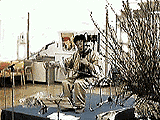
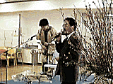
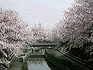
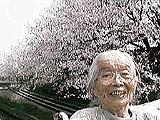

夕食前、じいちゃんやばあちゃんたちが、食堂に降りるエレベーターの順番を待っている。
次々とエレベーターに吸い込まれていくので、ばあちゃんは、だんだん、苛立ちはじめる。
トイレに行っておいたら？
行っておくかねぇ。
エレベーター前のトイレには先客がいたので、他に行こうと車椅子を回しかけると・・・。
ああ、トイレは行かんでいい。
早くここにやってくれ。
身を乗り出すようにして、エレベーターのすぐ脇を指さし、そこに移動するよう指示を出す。
早く、あん人と一緒に行かせてくれ。
車椅子じゃ入れないよ。一杯だから。
じゃあ、歩くかねぇ。
気持ちにつられて体もメシに引かれるが、車椅子から立ち上がろうとしても、すぐ動けない。
次のが来るまで待っていようよ。
あとが、えらい来んねぇ。
あとは、迎えに来んとたい。
遅かもん。もう来んかもしれん。
しもうたねぇ。もう切りがついたつねぇ。
人の減っとるもんねぇ。あいたぁ、メシば食いそこねた。
二胡の演奏者は、中国の馬 高彦（マ ガオイエン）さん。
二胡に似た胡弓の音色は「おわら風の盆」で知られている。
哀切な調べから一転して、かき鳴らすような演奏になると、
馬の群れが草原を駆け巡る風景が目の前に繰り広げられる。

ひなまつりにふさわしく、桃の花が大きく活けてある。
演奏の終わった馬高彦さんのかたわらで、園長が挨拶。
どんな顔ばしよると？「まきば園のホームページ」を。

〜明るい日ざしのなかで、何をするともなく、ぼんやりとベッドに座っている。〜
なんもせんで、ここにおってよかつかねぇ。
何かすることのありそうなもんだが。
勉強したら？
勉強するのはいいかもしれん。
ゆっくり本を読む時間もあるし。
そうねぇ、そう言わるるっと勉強する気のする。
何も働かんでいいかねぇ。
本を読むのも仕事のうちたい。おもしろそうな本があるじゃん。
そぎゃんあんたに言わるるっと、勉強するのもよかっちゅう心持ちのすっとたい。
〜夕食前、いつものようにエレベーターの前で、順番を待っている。〜
佐藤さ〜ん。鈴木さ〜ん。加藤さ〜ん。
〜次々と名前が呼ばれて、次々とエレベーターに吸い込まれていく。〜
ワシの名字は何だっけかなぁ？


桜並木をあとにした途端、
花見をしたことも忘れた。
| 年末年始のばあちゃん | 4月15日というのは |
| 春のメニューに戻る | ホームページに戻る |